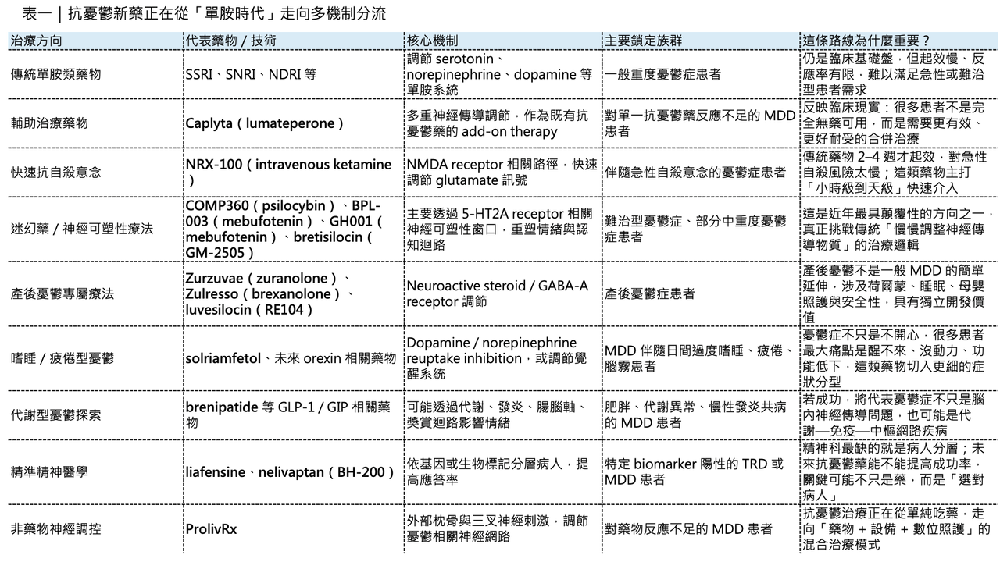
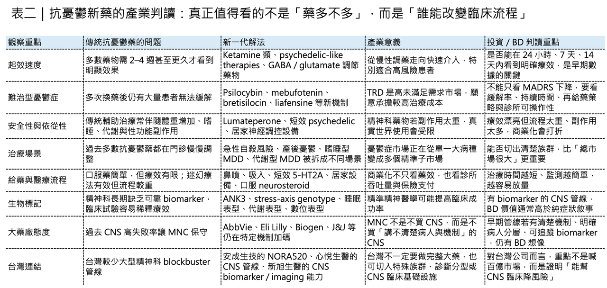

【精神科藥物終於走出單胺時代？】
分享這篇分析
把這篇文章轉給關注生技醫藥、公司研究或資本市場的朋友。
📌 憂鬱症從來不是一個小市場。

依 WHO 統計，全球約有 2.8 億人受到憂鬱症影響；若加上不同國家、不同診斷口徑下的未診斷與亞臨床族群，實際醫療負擔只會更高。這不是一個單純「心情不好」的問題，而是會影響工作能力、家庭關係、睡眠、認知、自殺風險，甚至整體慢性病預後的系統性疾病。但弔詭的是，這麼大的疾病負擔，過去幾十年的治療工具卻相當有限。
臨床一線仍以 SSRI、SNRI、NDRI、NaSSA、TCA、MAOI 等傳統單胺類藥物為主。這些藥物不是沒有效，而是有幾個長期痛點：起效慢，通常要 2–4 週甚至更久；部分患者療效不足；性功能障礙、體重增加、嗜睡、焦慮加劇等副作用影響依從性；更重要的是，對難治型憂鬱症患者而言，多次換藥之後仍可能無法達到真正緩解。所以，抗憂鬱新藥真正的競爭，不只是「再多一個藥」。
它要回答的是三個問題：
🧠能不能更快起效？
🧠能不能治療過去治不好的族群？
🧠能不能用更精準的機制，把憂鬱症從「症狀治療」推向「分型治療」？
2025–2026 年，抗憂鬱藥物研發的確出現了一些值得注意的變化。這個領域正在從傳統單胺假說，走向 谷氨酸、GABA、神經類固醇、5-HT2A、orexin、V1b、NK1、GLP-1 / GIP、數位療法與神經調控設備 的多路線競爭。精神科藥物，終於開始不像過去那麼「慢」了。

01｜監管端：Caplyta、Ketamine、居家神經調控，三條路線同時推進
📌 2025 年最具代表性的監管事件之一，是 Caplyta（lumateperone） 被 FDA 核准新增為成人重度憂鬱症的輔助治療選項。
這件事的意義不只是多了一個 MDD add-on drug，而是代表精神科藥物的開發邏輯越來越往「增強既有抗憂鬱治療」移動。很多 MDD 患者並非完全無藥可用，而是對一線抗憂鬱藥反應不足。這個族群過去常常需要加上 atypical antipsychotic，但代價是體重、代謝、嗜睡、錐體外症狀等副作用。
Caplyta 之所以值得注意，是因為它在 schizophrenia (思覺失調症）、bipolar depression（躁鬱症） 之外，再往 MDD 輔助治療延伸。FDA 的核准來自兩項 Phase 3 研究，顯示 lumateperone 加在既有口服抗憂鬱藥上，相較 安慰劑組 能顯著改善憂鬱症狀；J&J 也強調其體重、代謝與性功能副作用表現相對乾淨。這條路線很現實，也很商業。因為 MDD 的主流治療並不會被新藥一夜推翻。真正容易放量的藥，往往是能插進現有處方流程、被精神科醫師理解、也能被保險支付接受的藥。另一條監管線索，是 NRX-100（intravenous ketamine）。Ketamine 在憂鬱症治療上的地位早已不是新鮮事。真正的關鍵，是如何把它從「臨床實務中的 off-label 使用」推進到更明確的監管路徑。NRx Pharmaceuticals 的 NRX-100 已獲 FDA Fast Track Designation，用於伴隨自殺意念的憂鬱症患者；公司也表示計畫推進 NDA 申請。
這裡的核心不是一般憂鬱症，而是急性自殺風險。
傳統抗憂鬱藥物最大的問題，是起效速度不夠快。對有急性自殺意念的患者來說，2–4 週太久了。Ketamine / esketamine 這類 NMDA receptor 相關機制的價值，就在於能在小時到數天內產生症狀改善。這不是慢病維持治療的邏輯，而是精神科急症介入的邏輯。
📌 第三條線索，是神經調控設備。
Neurolief 的 ProlivRx 在 2026 年取得 FDA PMA approval，成為一款可在居家或診所使用、用於成人 MDD 輔助治療的處方型神經調控系統。FDA 資料顯示，ProlivRx 透過 focal external Combined Occipital and Trigeminal Afferent Stimulation（eCOT-AS）治療，適用於至少一種抗憂鬱藥治療後改善不足的成人 MDD 患者。
這代表抗憂鬱治療正在從「藥物單一路徑」變成「藥物 + 設備 + 數位化照護」的混合模型。精神科疾病本來就不是單一分子異常。睡眠、疼痛、壓力軸、神經網路、認知與情緒調控全都牽涉其中。神經調控設備若能進一步證明療效、可及性與長期依從性，未來可能會成為藥物反應不足患者的重要補充。

02｜快速起效：Psychedelic-like 藥物正在逼近主流精神醫學
⚡ 抗憂鬱新藥裡最受矚目的方向之一，是 psychedelic-like therapies（類迷幻藥療法）。
這個領域過去很容易被污名化，因為大家一聽到 psilocybin（裸蓋菇素）、5-MeO-DMT、LSD，就想到迷幻藥。但現在產業真正追求的，不是「迷幻體驗」本身，而是如何利用 5-HT2A receptor 相關神經可塑性窗口，在可控醫療場景下快速重塑情緒與認知迴路。
📌 COMP360（psilocybin） 是這條線最受關注的代表之一。Compass Pathways 在 2026 年宣布 COMP360 用於 treatment-resistant depression（難治性憂鬱症，簡稱TRD）的第二項 Phase 3 試驗達到主要終點，讓 psychedelic-assisted therapy（類迷幻藥療法） 距離真正進入主流監管框架又近了一步。但這條路不會輕鬆。Psychedelic 類藥物最大的監管挑戰，不只在安全性，也在試驗設計。這類藥物常有明顯主觀體驗，雙盲很難維持；心理支持流程如何標準化，也會直接影響療效判讀。FDA 對 MDMA-assisted therapy 曾經展現高度審慎態度，這也提醒市場：Psychedelic 不是只要數據漂亮就一定能過關。它需要的是藥物、治療流程、醫師訓練、風險管理與支付模式一起成熟。
另一個更「產業化」的方向，是縮短 psychedelic 體驗時間。
📌 Atai Beckley 的 BPL-003（mebufotenin benzoate intranasal spray） 已獲 FDA Breakthrough Therapy Designation，並規劃於 2026 年第二季啟動 Phase 3。BPL-003 的吸引力在於短治療窗口、快速起效與相對可操作的臨床流程。公司資料顯示，其 Phase 2b 研究支持快速且持久的抗憂鬱效果，並已與 FDA 完成 End-of-Phase 2 溝通。
📌 GH Research 的 GH001（mebufotenin inhalation） 則是另一個重要競爭者。其 Phase 2b 結果已發表於 JAMA Psychiatry，研究顯示 GH001 在 TRD 患者中可帶來快速憂鬱症狀改善，且安全性可接受。這兩類產品背後的邏輯很清楚：如果 psychedelic-like drug 需要病人在診所待上 6–8 小時，商業化會很重。
如果能把體驗窗口縮短到 1–2 小時，診所吞吐量、醫療人力、保險支付與患者接受度都會完全不同。這也是為什麼 AbbVie 願意用最高 12 億美元收購 Gilgamesh Pharmaceuticals 的 bretisilocin（GM-2505）。Bretisilocin 是一款短效 5-HT2A receptor agonist 與 5-HT releaser，目前處於 MDD Phase 2 開發階段；AbbVie 明確把它視為擴張精神科管線的重要資產。Psychedelic 類抗憂鬱藥的真正產業競爭，不會只是誰的 MADRS（ 蒙哥馬利憂鬱量表） 降更多，而是誰能把療效、治療體驗時間、安全監測與診所工作流程做到最平衡。
03｜產後憂鬱：從靜脈輸注到口服與新機制
🌙 產後憂鬱是抗憂鬱藥物中非常特殊的一個領域。
它不是一般 MDD（嚴重憂鬱疾患）的簡單延伸，因為它牽涉產後荷爾蒙劇烈變化、睡眠剝奪、母嬰互動、哺乳安全與家庭支持。藥物不只要有效，還要考慮母親與嬰兒的安全。目前這個領域最重要的機制之一，是 neuroactive steroid / GABA-A receptor positive allosteric modulator。
🌙 過去 Zulresso（brexanolone） 已經證明，調節 GABA-A receptor 可以對產後憂鬱產生快速療效，但靜脈輸注時間長、監測要求高，限制了普及。後來 Zurzuvae（zuranolone） 作為口服 neuroactive steroid 被核准用於 PPD，將這條路線推向更方便的治療模式。2026 年值得注意的新進展之一，是 Reunion Neuroscience 的 luvesilocin（RE104）。RE104 用於 PPD 的 Phase 2 RECONNECT 研究取得 positive topline results，並在 2026 年獲 FDA Breakthrough Therapy Designation；公司也表示計畫在 2026 年啟動 Phase 3。這件事的產業意義在於：PPD（產後憂鬱症） 正從過去「被低估的女性心理健康疾病」，走向一個具有專屬藥物開發路徑的市場。
但 PPD 藥物不能只看短期症狀改善。
真正的關鍵會是：
🌙 是否能快速起效？
🌙 是否適合哺乳期女性？
🌙 是否需要留院監測？
🌙 是否影響母嬰照護？
🌙 是否能被婦產科、精神科與基層醫療共同採用？
誰能把藥效和可及性做到最好，誰才有機會在產後憂鬱症市場真正放量。
04｜憂鬱症不是只有情緒低落：睡眠、疲勞、嗜睡正在變成新戰場
💤 很多 嚴重憂鬱疾 患者最痛苦的症狀，不一定只是心情低落。
而是睡不好、睡太多、醒不來、白天嗜睡、沒有動力、腦霧、注意力下降。這也是為什麼 solriamfetol 開始被推進到 MDD with excessive daytime sleepiness（EDS）這個族群。Axsome 在 2026 年啟動 CLARITY Phase 3 trial，評估 solriamfetol 用於 MDD 伴白天過度嗜睡症狀Solriamfetol 原本已在嗜睡相關疾病中有基礎，其機制是 dopamine / norepinephrine reuptake inhibition；若能在 MDD + EDS 族群中證明效益，這會是一個很典型的「症狀分型」策略。這其實很重要。憂鬱症不該再被當成單一疾病。
💤 有些人是焦慮型。
💤 有些人是失眠型。
💤 有些人是嗜睡疲倦型。
💤 有些人是快感缺失型。
💤 有些人是自殺風險急性型。
💤 有些人是產後荷爾蒙變動型。
💤 有些人是發炎或代謝共病型。
未來抗憂鬱藥物的競爭，會越來越像腫瘤或自免：不是一個藥打天下，而是不同病人亞型對應不同機制。這也是 orexin receptor 相關機制值得關注的原因。Orexin 系統與覺醒、睡眠、動機、能量、食慾與情緒調節都有關。Centessa、Takeda、Eli Lilly 等公司在 orexin 相關管線上大舉布局，雖然目前主戰場仍是發作性睡病與過度嗜睡，但從神經精神疾病角度看，orexin 系統未來可能延伸到憂鬱相關疲勞、嗜睡與動機缺損。這條路線不一定會成為典型「抗憂鬱藥」，但可能成為 MDD 特定症狀族群的精準補充。
05｜GLP-1 / GIP 進入憂鬱症：代謝藥的精神科羅生門
🧬 另一個很有意思的方向，是 GLP-1 類藥物進入精神科。
Eli Lilly 已經啟動 brenipatide 用於 MDD 的 RENEW-MDD-1 研究。ClinicalTrials.gov 顯示，這項研究評估 brenipatide 在成人 MDD 患者中，與標準照護合併使用時的安全性與療效。這個方向之所以值得看，是因為憂鬱症與代謝疾病本來就高度交疊。肥胖、胰島素阻抗、慢性低度發炎、睡眠呼吸中止症、腸腦軸異常，都可能和憂鬱症狀互相強化。GLP-1 / GIP 類藥物不只改變體重與血糖，也可能透過發炎、獎賞迴路、食慾、腸腦軸與中樞代謝訊號影響情緒。但這條路也最容易被過度解讀。
🧬 GLP-1 類藥物能不能直接治療 MDD？
🧬 還是只改善代謝共病後間接改善情緒？
🧬 哪些 MDD 族群最可能有效？
🧬 是否與 BMI、胰島素阻抗、發炎標記、睡眠障礙有關？
🧬 會不會只對代謝型憂鬱症有幫助？
這些都需要臨床回答。如果 brenipatide 這類研究成功，抗憂鬱藥物的想像會被重新打開。因為它代表 MDD 不只是 monoamine imbalance，也可能是一種包含代謝、免疫與中樞神經網路異常的系統性疾病。
06｜精準精神醫學：憂鬱症終於開始有 biomarker 了？
🧩 精神科藥物最大的痛點之一，是病人分層太差。
在腫瘤領域，EGFR、ALK、HER2、PD-L1、BRAF 可以幫助分層。在自免領域，抗體、細胞激素、免疫表型也能提供方向。但在憂鬱症裡，長期以來主要靠臨床症狀量表。這讓新藥開發非常痛苦。一個藥可能對某一類病人有效，但如果臨床試驗把所有 MDD 患者混在一起，療效就會被稀釋。最後不是藥沒有用，而是病人選錯了。所以 precision psychiatry （精準精神醫學）是抗憂鬱藥物下一個非常重要的方向。
Liafensine 是代表案例之一。JAMA Psychiatry 發表的 ENLIGHTEN 研究顯示，在 ANK3-positive treatment-resistant depression 患者中，liafensine 相較 安慰劑 帶來具統計與臨床意義的 MADRS 改善。這被視為精神科少見的前瞻性 基因生物標記導向臨床試驗。
這件事真正的意義，不只是 liafensine 本身。而是它證明精神科臨床試驗也可以朝 biomarker-guided development 前進。
另一個例子是 HMNC Brain Health 的 nelivaptan（BH-200）。HMNC 以 stress-axis 相關基因分型作為精準醫療，探索 V1b receptor antagonist 在 MDD 中的療效。其 OLIVE 研究雖然在特定預設族群上仍有爭議，但整體研究方向代表精神科藥物正在嘗試從「所有 MDD 都一起收」轉向「先找可能有反應的人」。未來抗憂鬱新藥若要提高成功率，不能只靠更強藥效。它還需要更好的病人選擇。這會讓 伴隨式診斷、基因檢測、數位表型、睡眠資料、腦影像、血液發炎標記、皮質醇軸指標，都可能變成精神科藥物開發的一部分。
07｜NK1、GABA、Glutamate：老標靶不一定死，只是需要新設計
🔬 抗憂鬱藥物研發有很多「死過一次又復活」的標靶。
NK1 receptor antagonist 就是典型例子。
早年 NK1 receptor antagonist 曾被寄予厚望，因為 substance P 與壓力、疼痛、情緒調節、神經發炎相關。但多個候選藥物在臨床上未能證明足夠療效，導致這條路線一度退潮。但現在有些研究團隊重新用 AI / machine learning 與結構設計回頭看 NK1，希望避開過去分子設計上的限制。這類「老標靶新分子」其實很值得注意。精神科不是所有失敗標靶都應該被丟掉，有時候失敗的是錯誤分子、錯誤病人、錯誤劑量或錯誤終點。GABA / glutamate 系統則是快速起效抗憂鬱藥的主戰場之一。Ketamine、esketamine、brexanolone、zuranolone 都已經證明，憂鬱症不只和 serotonin 有關。NMDA receptor、AMPA throughput、GABA-A receptor、神經可塑性、BDNF / TrkB 訊號，都可能參與快速情緒改善。這也是為什麼未來抗憂鬱藥物會越來越重視「神經網路重塑」。
傳統單胺類藥物像是在慢慢調整背景音量。新一代快速起效藥物更像是在短時間內打開神經可塑性窗口，讓大腦重新調整迴路。這也是 psychedelic、ketamine、neurosteroid、glutamate modulator 被看重的底層原因。
08｜台灣「抗憂鬱藥」，也要看 CNS 平台能力
🌏第一個是 安成生技（6610）。
安成的 NORA520 是口服前驅藥物，設計用於產後憂鬱症與 MDD。公司資料顯示，NORA520 會轉化為 brexanolone / allopregnanolone 相關活性成分，概念上瞄準的是 neuroactive steroid 與 GABA-A receptor 調節路線。這條路線與 Zurzuvae、Zulresso 所代表的 PPD 藥物方向一致。不過，安成在 2025 年公布 NORA520 用於 PPD 的美國 Phase 2 結果時，給藥組與 placebo 在主要療效指標上未達統計顯著。這代表它仍有後續開發策略、劑量、族群選擇與適應症定位需要重新思考。因為它提醒台灣投資人：PPD 是好賽道，GABA / neurosteroid 是被驗證過的機制，但臨床成功不會自動發生。病人選擇、劑量、給藥時間、終點設計與 placebo effect，都會決定結果。
🌏第二個是 心悅生醫（SyneuRx）。
心悅生醫長期聚焦 CNS，公開資料顯示其 Synxyrin（SNA11） 曾獲 FDA 核准進行 Phase 2，用於 treatment-resistant depression 與自殺症狀患者。其機制與 NMDA receptor modulation 相關，和本文提到的 ketamine / glutamate 系統有概念上的連動。公司也曾在 schizophrenia、dementia、depression 等 CNS 疾病布局。不過，心悅近年公司資本市場狀態有變化，投資人若要追蹤，需要特別注意資訊透明度、臨床進展與公開交易狀態。
【結語｜抗憂鬱藥不是沒機會，而是正在重寫分類方式】
✨ 抗憂鬱新藥的黃金時期，可能真的正在重新打開。
但這一次，不會是傳統 SSRI / SNRI 的簡單延長線。未來的抗憂鬱藥物會更像一組分層治療工具：
✨ 急性自殺風險，可能需要 ketamine 類快速介入。
✨ 難治型憂鬱症，可能需要 psychedelic-like therapy 或 glutamate modulation。
✨ 產後憂鬱，可能需要 neuroactive steroid / GABA-A receptor 調節。
✨ 嗜睡疲倦型 MDD，可能需要 wake-promoting 或 orexin 相關策略。
✨ 代謝共病型憂鬱，可能探索 GLP-1 / GIP。
✨ 特定基因或壓力軸表型，可能需要 precision psychiatry。
藥物反應不足者，可能需要居家神經調控設備作為輔助。這代表精神科藥物正在從「單一診斷、單一藥物」轉向「症狀維度 + 生物機制 + 病人分型」的新時代。真正的重點不是哪一個藥會成為下一個百億美元 重磅炸彈。而是憂鬱症終於開始被當成一組異質性疾病，而不是一個模糊的情緒標籤。誰能在這個新分類系統裡，找到最清楚的病人、最快的起效方式、最可接受的安全性，以及最容易被臨床採用的治療流程，誰才有機會成為下一代抗憂鬱市場的真正贏家。
參考資料：
[0]: 各公司官網＆公開資料
[1]:
Depressive disorder (depression)
WHO fact sheet on depression, providing information on prevalence, symptoms, prevention and contributing factors, diagnosis and treatment, and WHO's work in the area.
www.who.int
[2]:
New clinical data highlights CAPLYTA® (lumateperone) as a promising option for achieving remission in adults with major depressive disorder
CAPLYTA® nearly doubled the likelihood of remission at six weeks compared to placebo as an adjunctive therapy to an antidepressant based on pooled data from two Phase 3 studies 65% of patients reached remission with CAPLYTA®, with 43% achieving sustained
www.jnj.com
[3]:
NRx Pharmaceuticals, Inc. (NASDAQ:NRXP) Granted FDA Fast Track Designation for NRX-100 for Suicidal Ideation in Patients with Depression, including Bipolar Depression
This designation expands the addressable population for NRX-100 to the 13 million Americans who consider suicide each year and represents a 10x expansion of...
www.prnewswire.com
[4]:
Premarket Approval (PMA)
https://www.accessdata.fda.gov/scripts/cdrh/cfdocs/cfpma/pma.cfm
www.accessdata.fda.gov
[5]:
Compass Pathways - Compass Pathways Successfully Achieves Primary Endpoint in Second Phase 3 Trial Evaluating COMP360 Psilocybin for Treatment-Resistant Depression
Two highly statistically significant positive Phase 3 trials confirm highly differentiated profile for COMP360, demonstrating a level of clinical effect that has historically been extremely difficult to achieve in TRD COMP360 is the first classic psychede
ir.compasspathways.com
引用本文
若在簡報、報告或社群討論引用，建議附上 Drugnews 原文連結。
Drugnews 編輯部，〈全網最全的「抗憂鬱新藥」最新進展盤點〉，Drugnews｜藥時事，2026/05/15，https://drugnews.com.tw/articles/2026-05-15-antidepressant-new-drugs-pipeline.html
社群原文
讀完這篇，下一步看
這三篇會優先依主題、標籤與產業脈絡推薦，幫你把同一個問題讀得更完整。

讓大藥廠心動的管線到底做了什麼？
📌 醫藥產業的併購邏輯，正在發生一場非常明顯的結構性變化。過去幾年，許多 Biotech 都想往最大、最熱門、最容易被資本市場理解的賽道擠：腫瘤、ADC、自體免疫、GLP-1、雙抗、細胞治療。這些方向

這些中型 Biotech，正在把「重磅炸彈藥物」從夢想變成現金流
在很長一段時間裡，製藥業的 blockbuster drug，似乎是大型藥廠的專屬勳章。

OX2R 爆紅：從發作性嗜睡症，到下一代 CNS 藥物想像空間
【 OX2R 爆紅：從發作性嗜睡症，到下一代 CNS 藥物想像空間】中樞神經系統藥物開發，很久沒有出現一個這麼清楚、這麼有生物學邏輯、又這麼接近臨床突破的靶點。這個靶點就是 Orexin Recept